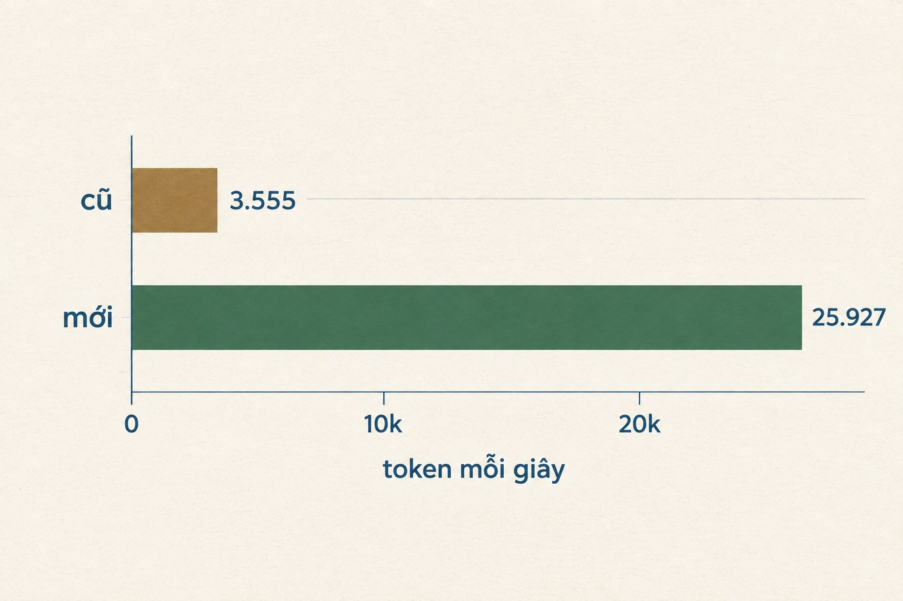
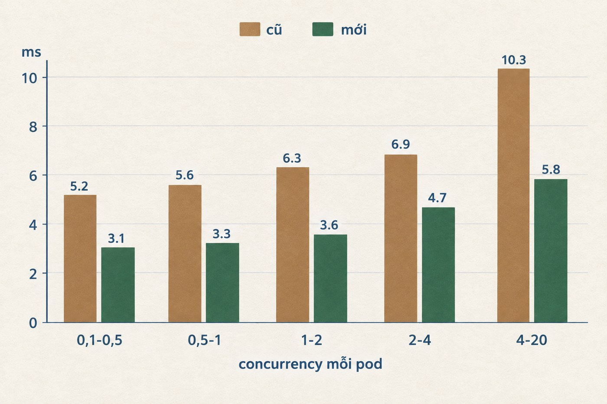
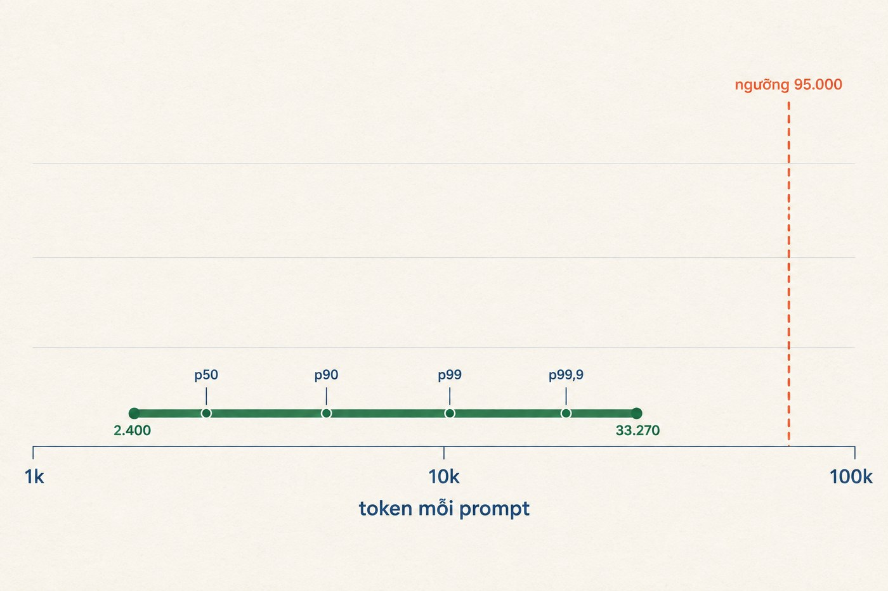
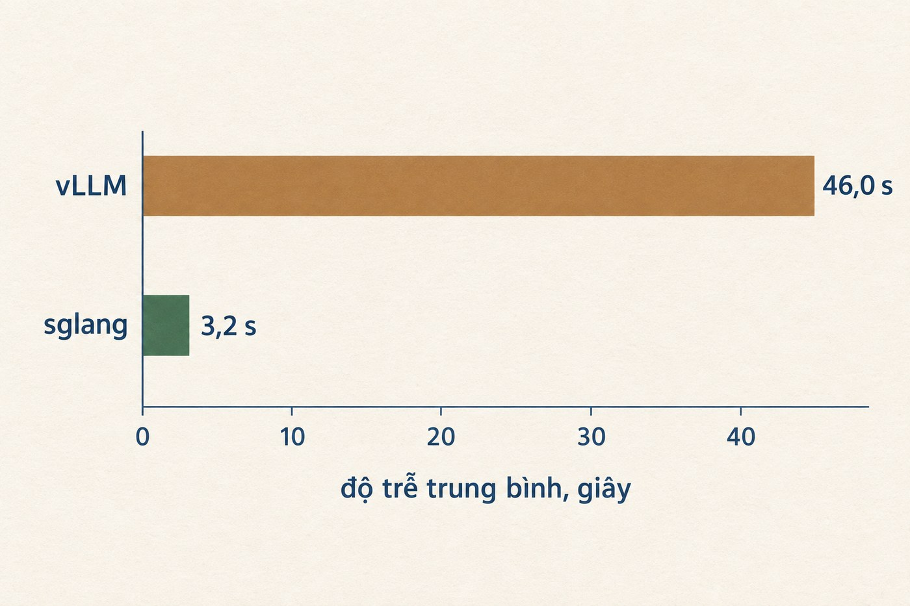

Một lần đổi engine, không đổi gì khác
misa-ai-1.1 chạy production trên cụm nội bộ, khoảng một triệu request mỗi ngày. Về kỹ thuật: MoE 35 tỷ tham số, kiến trúc hybrid linear-attention, trọng số FP8.
Đầu tháng 9 tôi chuyển nó sang một bản SGLang mới hơn kèm cấu hình attention khác. Mọi thứ còn lại giữ nguyên: trọng số, context length, memory fraction, chunked prefill size, phần GPU được cấp, và cả hai bản đều không bật speculative decoding. Vậy nên chênh lệch đo được là do engine, không phải do phần cứng hay model.
Kết quả trên traffic thật
Prefill là lúc engine đọc hết input, và đây là quãng chờ trước khi có token đầu tiên. Decode là lúc model sinh câu trả lời, mỗi lần một token. Hai giai đoạn giành nhau cùng một GPU, nên engine quyết định cả thời gian chờ lẫn tốc độ sinh token.
Bản mới nhanh hơn ở cả hai, chênh lệch lớn nhất nằm ở prefill.

Decode nhanh hơn ở mọi mức tải đo được, và khoảng cách nới rộng đúng lúc tải lên cao.

Ghép lại theo median production, một response 300 token đi từ 2,8 xuống 1,2 giây. Quãng chờ trước token đầu tiên: 0,88 xuống 0,10 giây. Thời gian nằm hàng đợi: 0,099 xuống 0,005 giây.
Request hoàn tất sớm thì giải phóng GPU sớm, nên cùng một pod phục vụ được 194 nghìn request mỗi ngày thay vì 88 nghìn.
Ba thay đổi, không cái nào chạm vào model
Weights, tokenizer và chat template giữ nguyên. Các service gọi sang nó cũng không sửa dòng code nào.
Thứ nhất, nâng container image, cách bản cũ khoảng hai tháng phát triển upstream.
Thứ hai, bật prefill backend dành riêng cho lớp linear-attention. Model là kiến trúc hybrid, phần lớn layer dùng linear attention, mà cấu hình cũ không khai báo backend cho nhóm này nên chúng chạy bằng kernel mặc định, vốn viết cho kiểu attention khác.
Thứ ba, bật nhóm sparse prefill kernel cho lớp full-attention, loại kernel dành cho context rất dài và có ngưỡng kích hoạt theo độ dài KV cache.
Prefill nhanh lên chủ yếu nhờ thay đổi thứ hai. Nhìn file cấu hình thì khó đoán, vì thay đổi thứ ba chiếm số dòng gấp bảy lần.
Tốc độ đến từ đâu
Nhóm flag sparse prefill là ứng viên rõ ràng nhất: kernel viết cho context rất dài, bật lên thì prefill nhanh, câu chuyện khép kín. Nhưng nó chỉ chạy khi KV cache của một request vượt 95.000 token.

Sáu ngày, gần sáu triệu request, đúng 60 cái chạm ngưỡng. Sparse prefill gần như chưa bao giờ chạy, và toàn bộ mức tăng prefill thuộc về nhóm layer linear-attention, nhóm nằm trên đường đi của mọi request.
Quy sai nguyên nhân thì lần sau người ta sẽ bê nguyên bộ flag sparse-prefill sang một model full-attention, mà ở đó nó chẳng bao giờ được kích hoạt. Ai định mang bộ flag này sang model khác, đọc lại đoạn ngưỡng 95.000 token trước đã. Chọn cấu hình serving theo kiến trúc model và kiểu tải thật, đừng đếm xem bật được bao nhiêu flag.
Cùng đợt đó, misa-ai-2.0
misa-ai-2.0 là model đa phương thức 26 tỷ tham số, chuyển sang sglang trong cùng đợt. Lần này không chỉ đổi engine: bản mới chạy trên CompactAttention thay vì đường attention mặc định. Thay vì quét toàn bộ prefix ở mỗi bước, nó chia prefix thành từng khối rồi chỉ giữ lại các khối quan trọng nhất, và chỉ bật khi prefix vượt 8.192 token.
Không phải thấy nhanh hơn là chuyển ngay. Cuối tháng 8, một bàn đo riêng trên 1×H200 với prompt 27,6 nghìn token không cache cho thấy sglang nhanh hơn vLLM 1,15 lần, thêm ba bản vá kernel thì lên 1,27 lần. Chưa đủ để đánh đổi một lần chuyển production.
Phép thử quyết định là phát lại đúng phổ tải của sự cố ngày 4 tháng 9, ép nhanh gấp 2,5 lần so với lúc nó xảy ra thật.

Lên production, hàng đợi cũng giảm y như trên bàn đo: chờ tới lượt từ 0,297 giây xuống 0,005 giây.
Ba workload cùng phục vụ bộ trọng số đó đều khai served-model-name giống hệt nhau, nhưng mỗi cái một api-key. Gateway vì thế rót cho chúng ba luồng traffic khác hẳn nhau, input trung bình 10.159, 8.714 và 14.272 token. Bản mới đang xử lý lượng prefill gấp mười lần bản cũ, 1.350 so với 126 token mỗi pod mỗi giây, mà hàng đợi vẫn gần như trống.
Chốt lại
Tóm lại: một lần thay image, thêm vài dòng cấu hình, quãng chờ token đầu tiên ngắn đi chín lần và mỗi pod phục vụ gấp đôi số request. Số liệu production đọc từ Prometheus, cửa sổ sáu ngày, đã chuẩn hoá theo số pod thật của từng workload.
Ghi chú
- Con số bảy lần trộn hai loại thống kê (trung bình uncached token chia cho TTFT p50) nên chỉ nên hiểu là “cỡ chừng ấy” chứ không phải hệ số chính xác. Chiều thì chắc chắn: 0,879 so với 0,098 giây, trong khi input bản mới chỉ ngắn hơn 25%.
- Con số 2,8 xuống 1,2 giây tính từ TTFT p50 cộng 300 lần ITL median ở dải concurrency 1 tới 2, không phải đo trực tiếp một request. Hai workload phục vụ client khác nhau nên không so thẳng e2e latency được.
- Hình minh họa và biểu đồ trong bài dựng bằng gpt-image-2.5. Mọi con số in trên biểu đồ đã đối chiếu lại với số liệu gốc.
- Bài viết không liệt kê chi tiết flag và giá trị tuning của cấu hình serving.